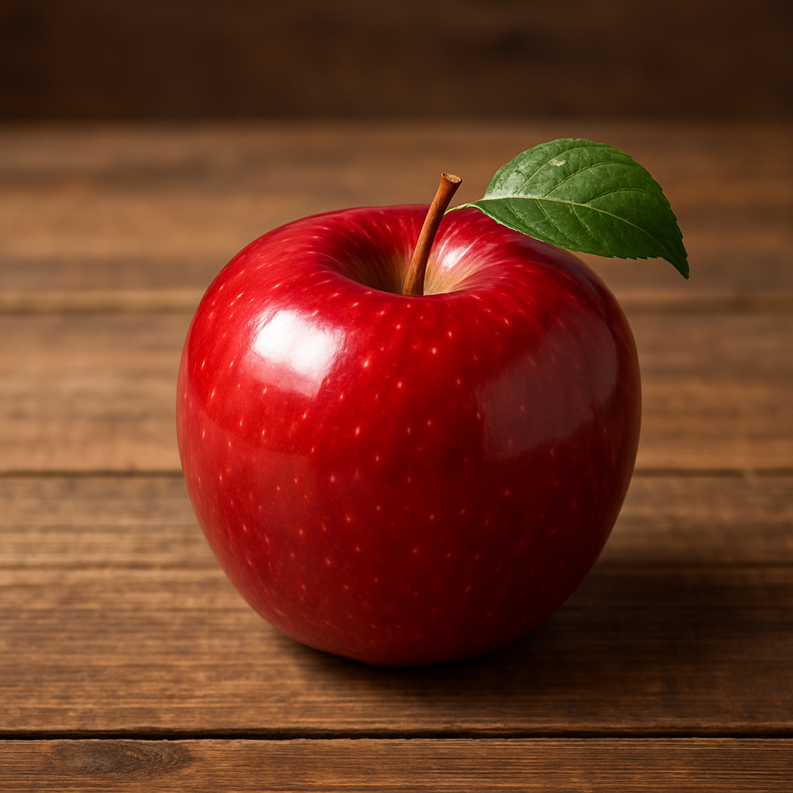
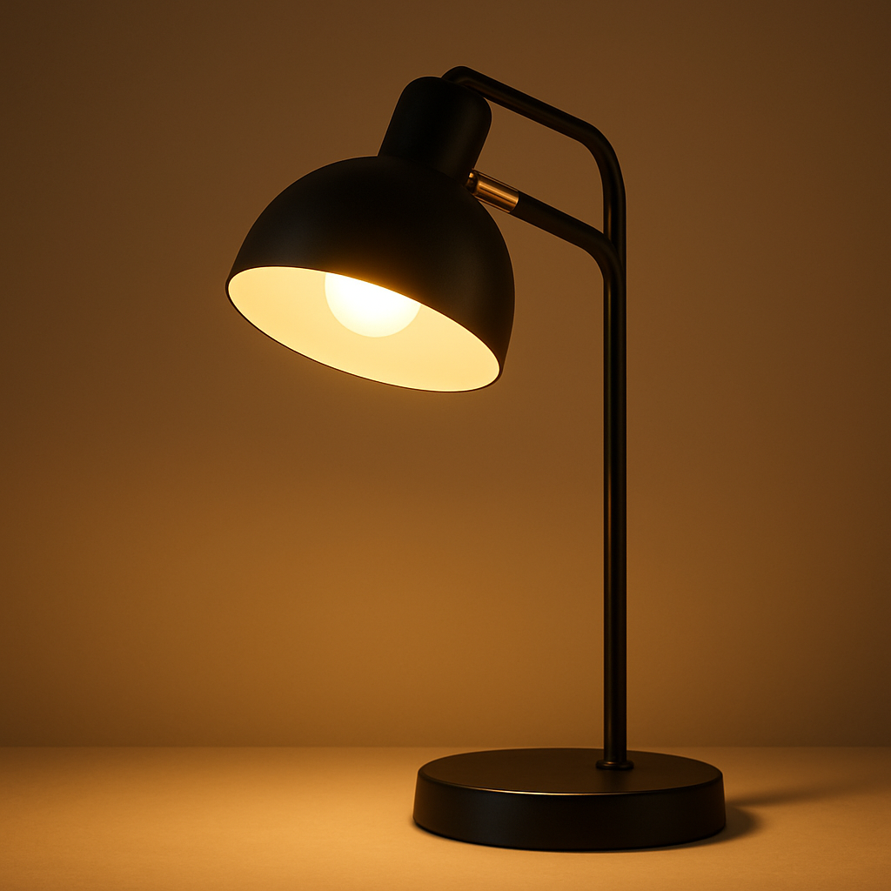
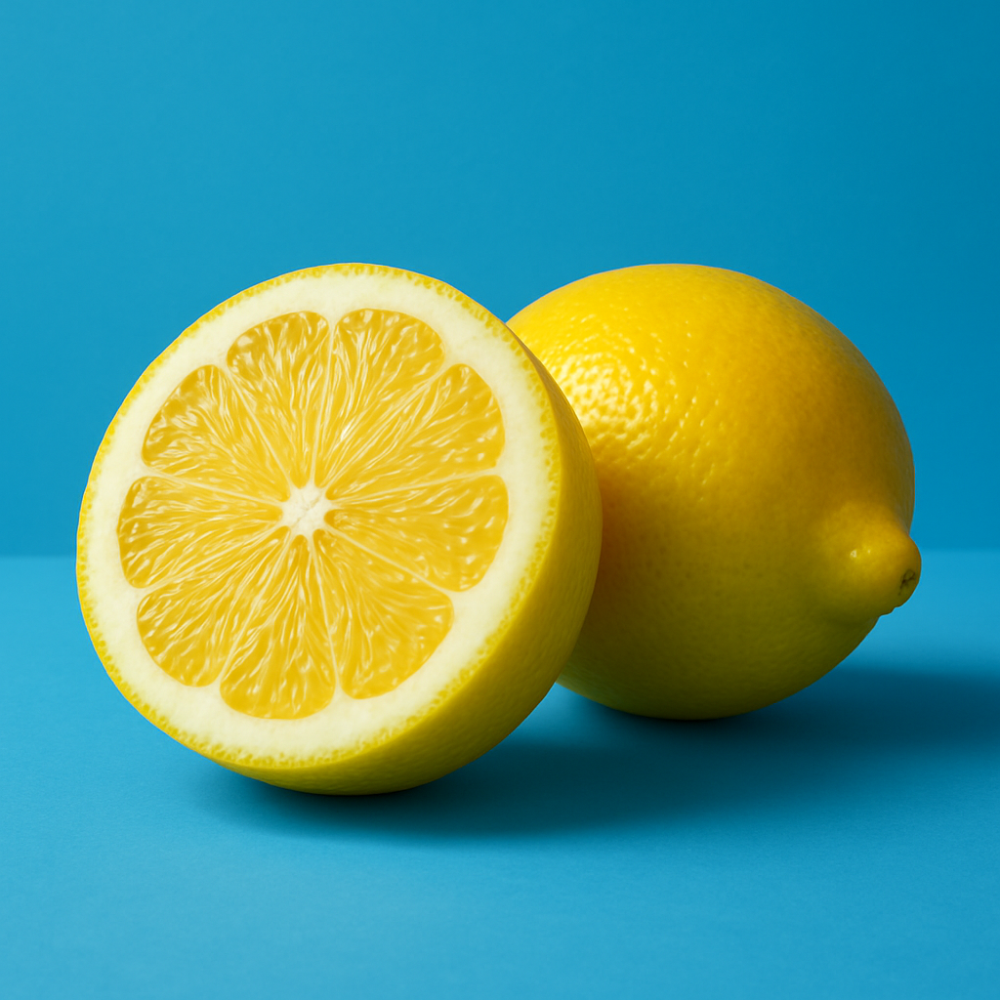
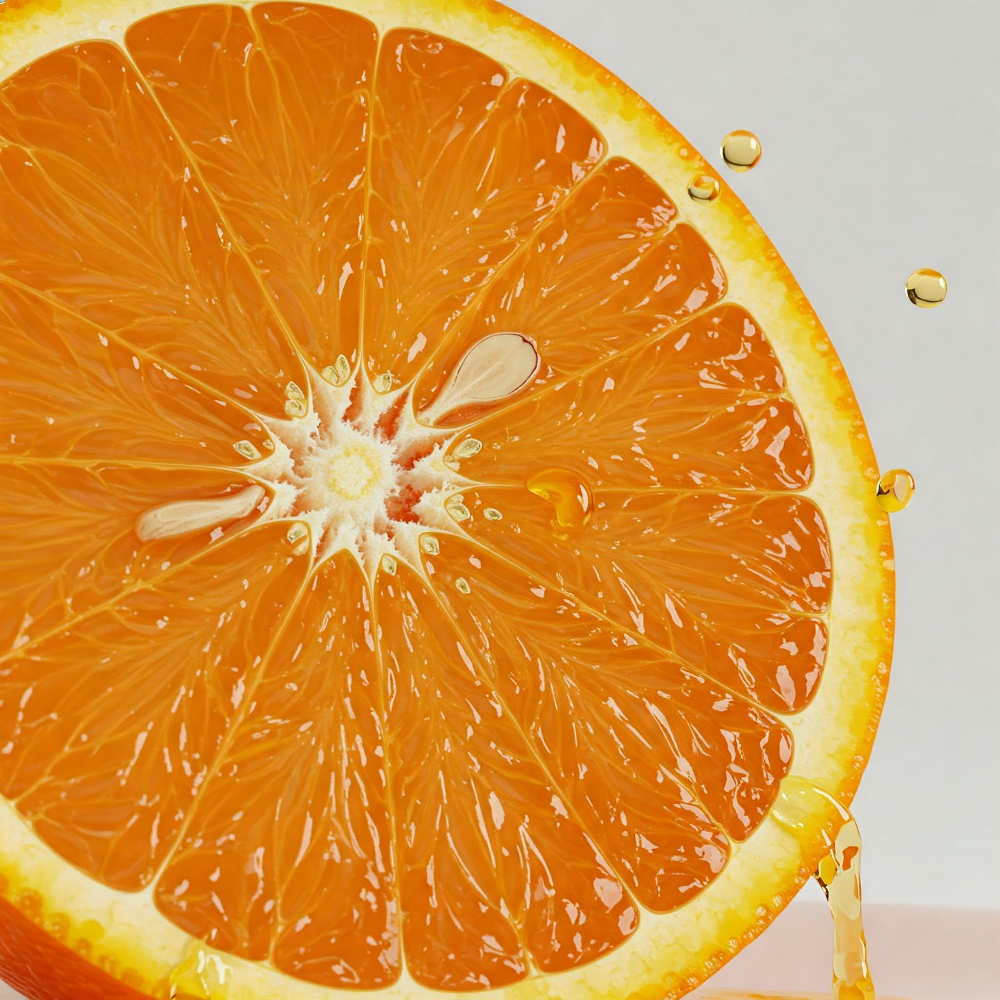
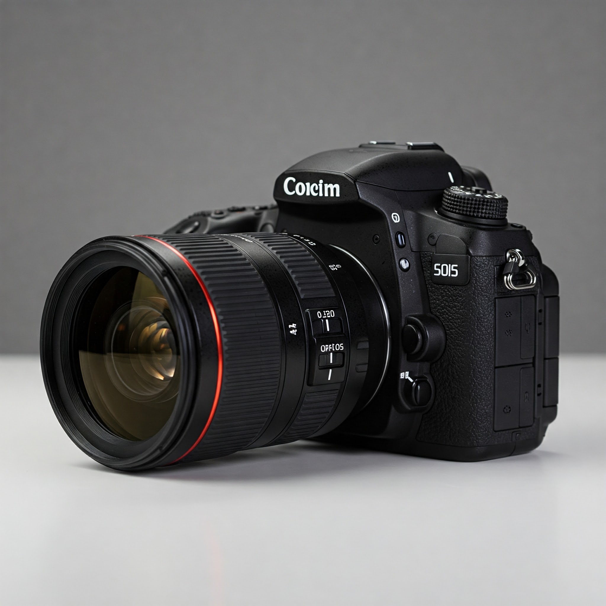

A - Apple (1st letter in Allison)

L - Lamp (2nd letter in Allison)

L - Lemon (3rd letter in Allison)
I - Ice (4th letter in Allison)
S - Shoe (5th letter in Allison)

O - Orange (6th letter in Allison)
N - Notebook (7th letter in Allison)
R - Rose (1st letter in Roach)
O - Owl (2nd letter in Roach)
A - Airplane (3rd letter in Roach)

C - Camera (4th letter in Roach)
H - Hat (5th letter in Roach)
❮
❯
AI Image Generation Notes
These prompts were used to generate the images used for the slideshow:
- A - "A shiny red apple on a wooden table, photorealistic"
- L - "A modern desk lamp with warm lighting, product photography style"
- L - "A sliced lemon on a blue background, high resolution"
- I - "Ice cubes in a glass with condensation, macro photography"
- S - "A pair of white sneakers on a clean surface, studio lighting"
- O - "A fresh orange sliced in half with juice droplets, food photography"
- N - "A leather-bound notebook with pen, flat lay composition"
- R - "A red rose with dewdrops, close-up nature photography"
- O - "A wise-looking owl perched on a branch at dusk"
- A - "A vintage airplane flying over clouds, golden hour lighting"
- C - "A professional DSLR camera with lens, product shot"
- H - "A stylish wide-brimmed hat on a beach with sunset"
DALLE-3 and Google Gemini were used to generate all images